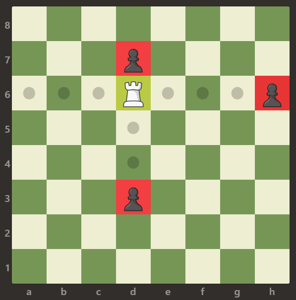
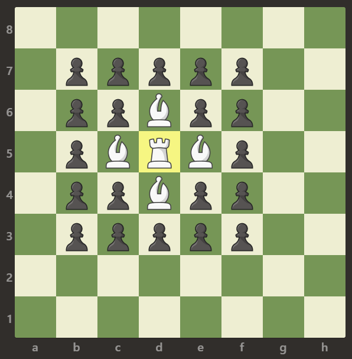
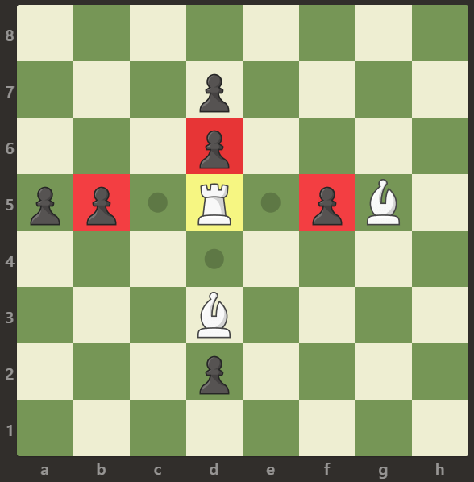

本文最后更新于：2020年3月26日 下午
地址：https://leetcode-cn.com/problems/available-captures-for-rook/
题目
在一个 8 x 8 的棋盘上，有一个白色车（rook）。也可能有空方块，白色的象（bishop）和黑色的卒（pawn）。它们分别以字符 “R”，“.”，“B” 和 “p” 给出。大写字符表示白棋，小写字符表示黑棋。
车按国际象棋中的规则移动：它选择四个基本方向中的一个（北，东，西和南），然后朝那个方向移动，直到它选择停止、到达棋盘的边缘或移动到同一方格来捕获该方格上颜色相反的卒。另外，车不能与其他友方（白色）象进入同一个方格。
返回车能够在一次移动中捕获到的卒的数量。
示例 1：

输入：[[".",".",".",".",".",".",".","."],[".",".",".","p",".",".",".","."],[".",".",".","R",".",".",".","p"],[".",".",".",".",".",".",".","."],[".",".",".",".",".",".",".","."],[".",".",".","p",".",".",".","."],[".",".",".",".",".",".",".","."],[".",".",".",".",".",".",".","."]]
输出：3解释：
在本例中，车能够捕获所有的卒。
示例 2：

输入：[[".",".",".",".",".",".",".","."],[".","p","p","p","p","p",".","."],[".","p","p","B","p","p",".","."],[".","p","B","R","B","p",".","."],[".","p","p","B","p","p",".","."],[".","p","p","p","p","p",".","."],[".",".",".",".",".",".",".","."],[".",".",".",".",".",".",".","."]]
输出：0解释：
象阻止了车捕获任何卒。
示例 3：

输入：[[".",".",".",".",".",".",".","."],[".",".",".","p",".",".",".","."],[".",".",".","p",".",".",".","."],["p","p",".","R",".","p","B","."],[".",".",".",".",".",".",".","."],[".",".",".","B",".",".",".","."],[".",".",".","p",".",".",".","."],[".",".",".",".",".",".",".","."]]
输出：3
解释：
车可以捕获位置 b5，d6 和 f5 的卒。提示：
board.length == board[i].length == 8board[i][j]可以是'R'，'.'，'B'或'p'- 只有一个格子上存在
board[i][j] == 'R'
解题思路
首先读懂题目，可以知道棋盘上只有唯一的一个白色车 R ，这就是切入点，转化一下题目的意思其实就是 R 所在的行和列上能直接连通的黑色卒 p 的个数（直接连通是指，没有任何棋子阻挡，空格不是棋子。并且显然可以知道结果只可能是整数0 ~ 4）。
所以第一步，找到唯一 R 的位置。通过一个两层循环可以很容易做到，并且代码中我利用一层循环两边向中间遍历，可以节省一半的查找速度。
第二步，以 R 的坐标 (ai, aj) 为中心，分别遍历四个方向上是否有可以捕获到的卒。这里再一次利用到了 vector<pair<int, int>> 数组用于遍历以 R 为中心的四个方向。遇到空格不做处理；如果遇到白象，则跳出当前方向上的遍历以继续判断下一个方向；如果遇到黑卒 p ，则该黑卒能捕获，将数量 num++ ，并跳出当前方向的遍历。
在二层循环内部的判断是否找到 R 的 if 语句块的末尾，将数量 num 返回，因为棋盘中仅存在一个 R 。
函数需要一个返回值，所以函数末尾需要默认返回 0 ，事实上根据题意程序不会运行到函数末尾，因为棋盘大小已经给定总是 8×8 的，并且 R 也是一定存在的，函数总会在二层循环内部就将结果返回。
代码
class Solution {
public:
int numRookCaptures(vector<vector<char>>& board) {
int num = 0;//数量，返回值
for (int i = 0; i < 4; i++) {
for (int j = 0; j < 8; j++) {
//前后同时往中间遍历，加快一半的查找速度
if (board[i][j] == 'R' || board[7 - i][j] == 'R') {
int ai, aj;//白车的坐标
if (board[i][j] == 'R') {
ai = i;
aj = j;
}
else {
ai = 7 - i;
aj = j;
}
vector<pair<int, int>> dir = { {-1,0},{1,0},{0,-1},{0,1} };//上、下、左、右
for (auto d : dir) {
int ii = ai + d.first;
int jj = aj + d.second;
//往一个方向遍历
while (ii >= 0 && ii < 8 && jj >= 0 && jj < 8) {
//白色的象
if (board[ii][jj] == 'B') {
break;
}
//黑色的卒
else if (board[ii][jj] == 'p') {
num++;
break;
}
ii += d.first;
jj += d.second;
}
}
return num;//返回结果
}
}
}
return 0;
}
};本博客所有文章除特别声明外，均采用 CC BY-SA 3.0协议 。转载请注明出处！